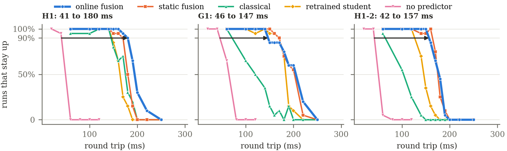
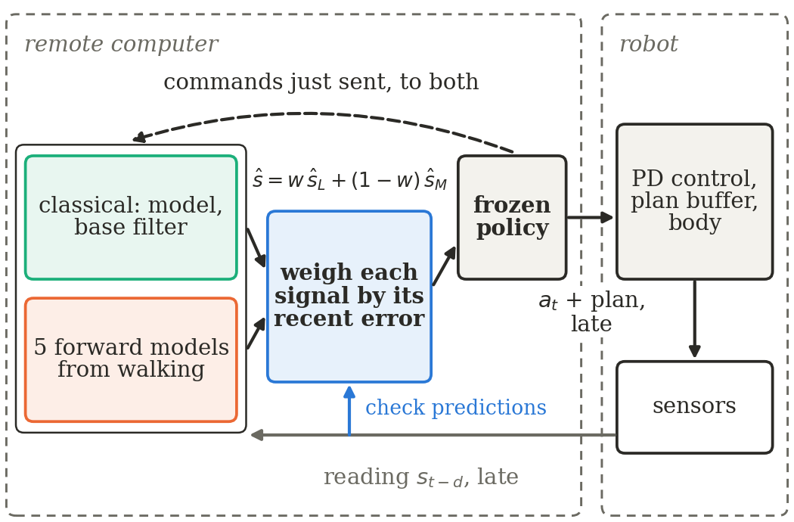

Humanoid locomotion, delay compensation · simulation only · Submitted to IEEE Robotics and Automation Letters (26-7088), November 2026
A walking policy that runs on a remote computer steers a body it sees late, and the robot falls: pretrained humanoid policies start to fall at round trips of 41–46 ms. Retraining for delay would replace the policy. Here it stays frozen: a physics-model predictor and learned forward models both predict the present state, and each sensor channel is weighted by how wrong each prediction proved one delay later, when the reading of that moment arrives. In simulation on three humanoids the round trip tolerated at 90% survival rises to 147–180 ms. Nothing here was tested on hardware.
Mu-Hua Wang · National Yang Ming Chiao Tung University · sole author
Three 10 s clips (Unitree G1, H1, H1-2 in MuJoCo). Each shows the same robot and the same random seed (seed 40) with no predictor (left) and with online fusion (right); a 140 ms round trip switches on at 5 s. One run per robot, not a statistic. Over the 20 test seeds, online fusion stays up in 20 of 20 runs at 140 ms on each robot; with no predictor 0 of 20 stay up at 120 ms, the longest round trip tested without a predictor.
Each mark is one simulated run on a clean link with standard walking, seeds 40–59: upright if the robot stayed up for the 30 s with the delay on, flat if it fell. The slider steps through the round trips that were tested, so every count is measured, not interpolated. No predictor was tested from 20 to 120 ms and online fusion from 60 to 250 ms.
Each run walks undelayed for 5 s, then for 30 s with the delay on, and survives if the robot stays up to the end. The limit at 90% survival moves from 41–46 ms with no predictor to 147–180 ms with online fusion (3.2–4.4 times), and at 50% survival from 49–65 ms to 178–205 ms. Over 12 conditions (three robots; standard walking, a hidden 10% payload, halved friction, lateral pushes) online fusion's mean limit at 50% survival is 54.1 ms above a tuned classical predictor (95% interval 49.0 to 59.8) and 25.0 ms above a policy retrained for delay (20.1 to 29.1).
no predictor vs online fusion, three humanoids, 20 seeds per point
from the best of five methods, at 50% / 90% survival; the other four: 23–95 / 33–104 ms
mean survival over two traces, predictor alone vs with 200 ms command plans

Survival against round trip on a clean link, 20 seeds per point. Arrows show how far the 90% limit moves from no predictor to online fusion: H1 41 → 180 ms, G1 46 → 147 ms, H1-2 42 → 157 ms. The classical predictor is close on H1 and far behind on G1 and H1-2. On G1 the retrained student and static fusion hold 90% survival longer than online fusion.
| Clean link, limit at 50% / 90% survival (ms) | H1 | G1 | H1-2 |
|---|---|---|---|
| No predictor | 49 / 41 | 65 / 46 | 51 / 42 |
| Classical predictor (mismatched physics model, tuned filters) | 175 / 145 | 120 / 71 | 103 / 65 |
| True model (privileged) | 202 / 160 | 162 / 120 | 137 / 107 |
| Student (policy retrained for delay) | 164 / 147 | 184 / 170 | 146 / 127 |
| Static fusion (fixed weights) | 180 / 170 | 202 / 170 | 175 / 164 |
| Online fusion | 194 / 180 | 205 / 147 | 178 / 157 |
Most of the gain comes from fusing the two predictions. Updating the weights online adds 9 ms of mean limit over static fusion at 50% survival (95% interval 6 to 13) and 5 ms at 90% (−1 to 11, not resolved). What the online checks remove is the worst case: over 12 conditions online fusion is at most 14 / 23 ms short of the best of five methods, against 23–95 / 33–104 ms for the others.

The predictor sits in front of the frozen policy on the remote computer, where the commands are known. The robot keeps only PD control and a buffer of planned commands.
The policies are the public pretrained walking policies for Unitree G1, H1 and H1-2, run in MuJoCo and not modified. The classical half re-simulates the delay interval in a deliberately mismatched physics model under the commands sent, with filters for base velocity and tilt tuned in its favor. The learned half is five forward-model networks fitted on 12 min of ordinary undelayed walking, with noisy readings and no clean state. The two are combined per sensor channel by inverse error variance, and the variances follow the check that becomes possible when each late reading arrives. The components are established ones (state predictors, inverse-error forecast combination, adaptive noise estimation); the work applies them to a frozen learned walking policy and measures when each alternative wins.
The predictor needs the commands: without them in either half, the limit at 50% survival falls from 178–205 ms to 90–114 ms. When the body changes in mid-walk, online weights raise survival over weights frozen just before the change by .11, .08 and .06 on H1, G1 and H1-2; with no change the same comparison gives .01, −.01 and .08, so a response to the change is shown on H1 and G1 and not on H1-2.
Each command packet also carries the next 200 ms of commands, obtained by running the predictor and a copy of the policy further ahead; the robot plays the entry for the current time. On two recorded 10-minute traces of one home Wi-Fi link with 10 ms added, mean survival is 38–68% with no predictor, 48–80% with the predictor alone and 93–100% with plans. Over the traces and added delays, plans add .28, .31 and .38 of survival on H1, G1 and H1-2 (95% intervals .20–.37, .23–.39, .29–.47). With 140 ms added, survival is still only 25–60%. Plans raise the compute per control step from 1.4–2.9 ms to 7.1–9.8 ms on one laptop core.
Scope: simulation only, on flat ground at one commanded speed, for three pretrained policies from one public repository; none of it is evidence about hardware. On G1 the retrained student and static fusion reach 170 ms at 90% survival against 147 ms for online fusion. On a body the predictor was not fitted on (15% heavier, 20% lower friction, 10% weaker PD) online fusion gives up 58–97 ms at 50% survival, and the privileged true-model predictor goes further than online fusion on H1 (202 ms). With command plans, online and static fusion are not separated, so the Wi-Fi result rests on the plans. There is no comparison with delay-randomized training, the recorded links come from one home network, and the plan length was chosen on the same traces.